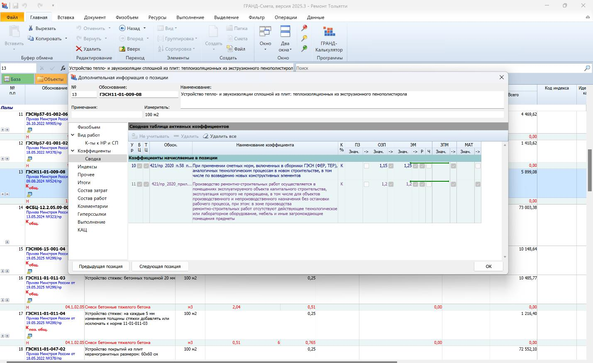
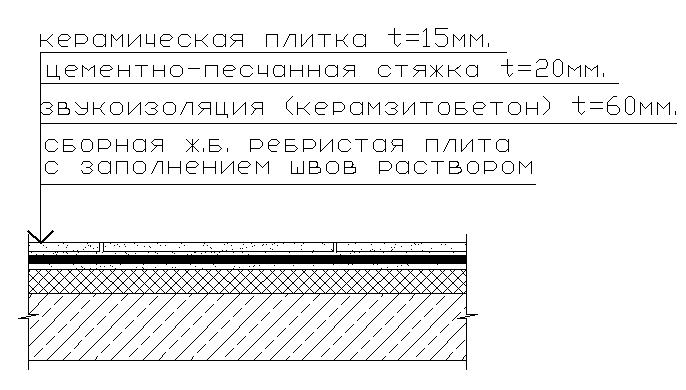
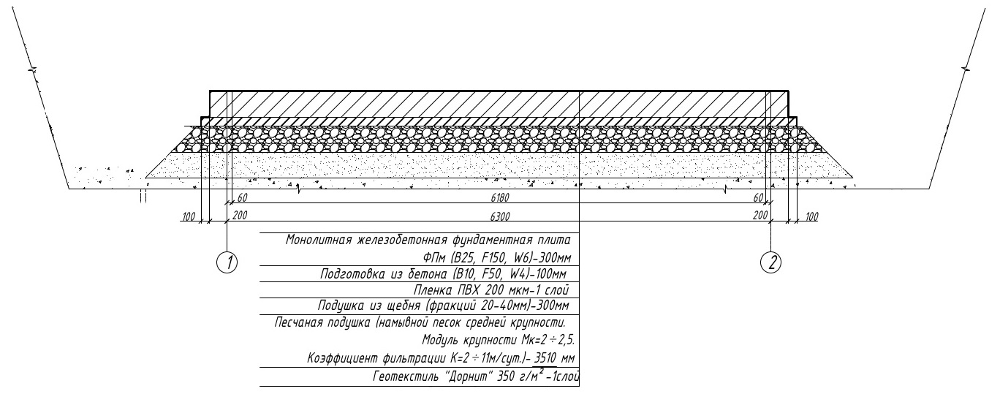

Объемы работ

Где брать объем работ для составления смет
На этом уроке разберем, где взять основание для составления сметного расчета.
Исходные данные для любой сметы – это объем работ.
Объем работ берем из ТЗ, вернее приложения к нему – Ведомости объемов работ, проектной документации, терроризируем коллег из ПТО, либо открываем чертежи и считаем сами. Что нам необходимо в ведомости объемов работ:
- Наименование и адрес объекта
- Вид работ
- Перечень подлежащих выполнению работ
- Существенные условия/усложняющие факторы
Например:
Самарская область, г. Тольятти, ул. Мира, д. 1, стр. 1 Деловой центр «Мировой» Ремонт напольного покрытия в офисных помещениях № 1-3
Ремонтные работы осуществляются в помещениях действующего объекта, освобожденных от мебели. |
Всегда (!) в обязательном порядке требуйте предоставление сведений об усложняющих факторах производства работ – стесненность, наличие действующего оборудования рядом с местом производства работ, кабельных линий и линий ВЛ, ж/д путей и т.д., например:

Вышеуказанные коэффициенты отражают удорожание стоимости работ ввиду наличия усложняющих факторов, в данном примере, это производство ремонтных работ по расценкам применяемым в новом строительстве (так как данные расценки отсутствуют в сборниках на ремонтные работы) и производство работ в помещениях эксплуатируемого объекта.
Если данные сведения отсутствуют в документе-основании (ПОС, ВОР и т.д.), вы не сможете обосновать их применение в смете, следовательно их придется исключить, что с одной стороны хорошо Заказчику – удешевление работ, но плохо Подрядчику – существенно снижается ФОТ (фонд оплаты труда) что тянет за собой снижение величины НР (накладных расходов) и СП (сметной прибыли) в рублевом выражении.
Итак, объемы посчитали, что дальше?
Дальше определяемся с технологической последовательностью выполнения работ. В примере ВОР (выше) указана последовательность работ в соответствии с технологией их выполнения, то есть, сначала демонтируем старое, потом стелим новое. Обычно в чертежах указывают «пирог» будь то пола, кровли и т.д…

На примере наглядно видно последовательность устройства слоев «пирога» пола, движемся снизу вверх, то есть финишное покрытие всегда в конце. Данный принцип применим практически всегда при выполнении строительных работ.
Если договором предусмотрено выполнение незначительного объема и перечня работ, можно обойтись одной сметой, разделив виды работ на разделы.
Если же требуется выполнение работ от «нуля» до «ветряка», то каждый вид работ оформляется отдельным сметным расчетом (сметой) с соблюдением нумерации в соответствии с главами сводного сметного расчета (ССРСС) — согласно Приказу от 4 августа 2020 г. № 421/пр, пункты с 25 по 42.
Давайте сразу потренируемся. Вам нужно расставить последовательность расценок и материалов в смете согласно приложенной схеме.
